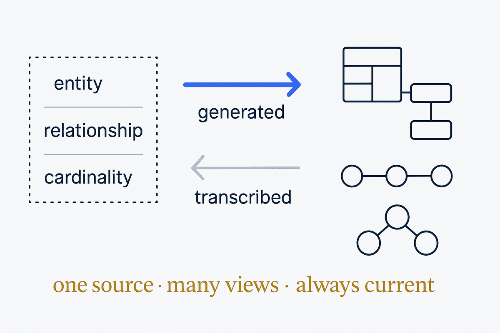

A diagram is not a drawing you maintain. It is a view generated from the model — always current, in whatever notation the reader needs. The rule is directional: read the picture from the source; never transcribe the source into a picture.

The test: when reality changes, does someone have to open a drawing tool? If yes, you have a picture. If no, you have a view.
Why hand-drawn diagrams drift, why that is arithmetic rather than carelessness, and what replaces them. Then: why it matters, how it works, diagram types, notations.
The named ideas — Living Diagrams, Generated Palettes, Clickable Diagrams, Impact Analysis — and the terms we use consistently but did not invent.
Two dozen articles in the order they read, and research: the tool landscape, the Miro question, the missing ERD skill, a feature matrix.
What exists in the Claude skills ecosystem for diagrams — and the gap where an ERD skill should be.
Capture structure as metadata, not boxes on a canvas. The moment structure is data, everything downstream becomes possible.
Render into whatever notation fits — ERD, lineage, context, flow. Deterministic: same model, same picture.
People still sketch, and sketching is thinking. Parse the drawing back rather than leaving it stranded.